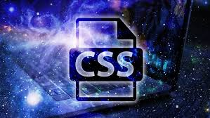
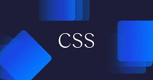
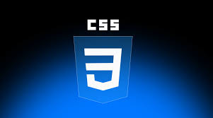

AGORA VAMO PARA CSS3
O CSS3 é a terceira e mais recente versão do CSS(Cascading Style Sheets), a linguagem usada para estilizar a aparência de páginas web. Ele não é uma tecnologia completamente nova, mas sim uma evolução que adiciona novos módulos e recursos ao CSS2.1.
Modularidade:Em vez de ser uma especificação gigante e única, o CSS3 foi dividido em módulos menores. Isso permitiu que os navegadores implementassem os recursos de forma gradual, facilitando o desenvolvimento e a adoção.



Novas propriedades de estilo: O CSS3 introduziu uma série de propriedades poderosas que mudaram a forma como criamos designs para a web. As mais populares incluem:
Border-radius: Permite criar cantos arredondados em elementos.
Box-shadow: Adiciona sombras a elementos, dando profundidade ao layout.
Text-shadow: Similar ao box-shadow, mas para textos.
Background-size e Background-origin: Oferecem maior controle sobre imagens de fundo.
Gradientes: Permitem criar transições de cor (gradientes lineares e radiais) sem precisar de imagens.
Animações e transições: O CSS3 trouxe a capacidade de criar animações e transições diretamente no CSS, eliminando a necessidade de JavaScript para efeitos mais simples. Isso tornou as interfaces mais dinâmicas e responsivas.
Transformações: Com as propriedades transform, é possível rotacionar, inclinar, escalar ou mover elementos em 2D (transform: rotate(), scale()) e 3D (transform: rotate3d(), translate3d()).
Flexbox e Grid: Esses dois sistemas de layout revolucionaram a forma de organizar o conteúdo.

(Flexible Box Layout): É ideal para layouts unidimensionais (linhas ou colunas). É perfeito para alinhar itens, criar menus de navegação e garantir que o conteúdo se ajuste de forma flexível.
Grid (CSS Grid Layout): É a ferramenta para layouts bidimensionais. Permite criar estruturas complexas de linhas e colunas com facilidade, sendo ideal para o layout principal de uma página inteira.
Media Queries: Este é um recurso fundamental para o design responsivo. Ele permite aplicar estilos diferentes com base nas características do dispositivo do usuário, como largura da tela, altura ou orientação (retrato/paisagem). É o que faz um site parecer bom tanto em um celular quanto em um monitor grande.
Em resumo, o CSS3 é a evolução do CSS que trouxe um conjunto de ferramentas robustas para estilizar, animar e organizar o layout de páginas web de forma mais eficiente, criativa e responsiva, sem depender tanto de outras linguagens.